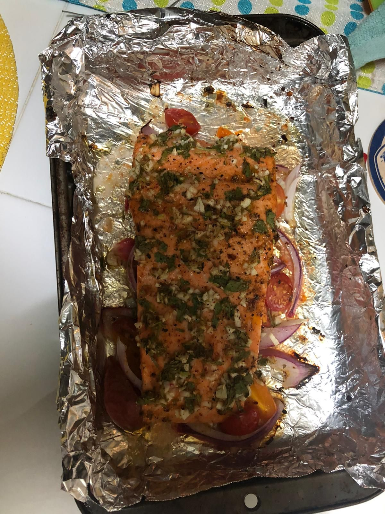

Cilantro Lime Trout

Juicy delicous Cilantro Lime Trout with dirty rice
Tomato and Onion cooked underneath a Cilantro Lime Trout, with dirty rice on the side, super easy to make and super delicious!
Ingredients for Cilantro Lime Trout
- Cilantro
- Lime
- Cajun Seasoning
- Steelhead Trout
- Cherry Tomato
- Red Onion
Ingredients for Dirty Rice
- Jasmine Rice
- Tumeric
- Garlic Salt
Steps
- Chop Cilantro, Lime into small sizes, and port of cajun seasoning to the side
- pre-heat oven to 400 degrees
- mardinade Steelhead trout with seasoning, spread Cilantro on Trout, and juice of Lime on trout
- Place cherry tomatoes, and onion on baking sheet
- Place Trout ontop of tomatoes
- set trout inside of oven
- clean rice, and fill water with rice to level
- add tumeric and Garlic Salt to water of rice